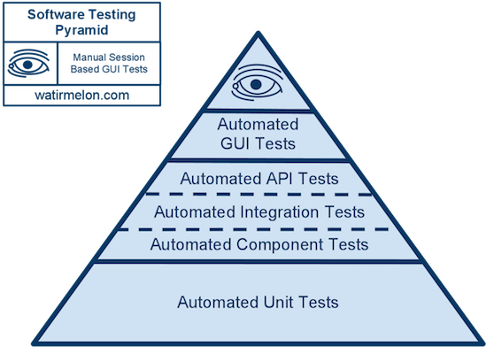
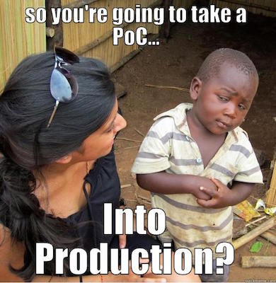

Head of Web Development at Student.com
ES2015 -> CommonJS -> Browser bundle
bare minimum to prove the idea can work

import * as stringUtils from 'student/src/utilities/helpers/string';
import { renderTemplate } from 'student/src/utilities/templates/render';
export default function articlesFactory( element, options ) {
...
}
// stickyNav.js
export function init( {
yScrollPos: yScrollPos = 240,
fixedClass: fixedClass = 'fixed',
stickySelector: stickySelector = '.page-nav',
breakpoint: breakpoint = 800,
} = {} ) {
...
}
// main.js
import { init as stickyNav } from './stickyNav';
stickyNav();

finally functionalityproblem -> solution -> poc -> pilot -> rinse & repeat
Join us @ https://www.student.com/careers
Slides available @ http://craveytrain.com/slides/live_with_es2015/